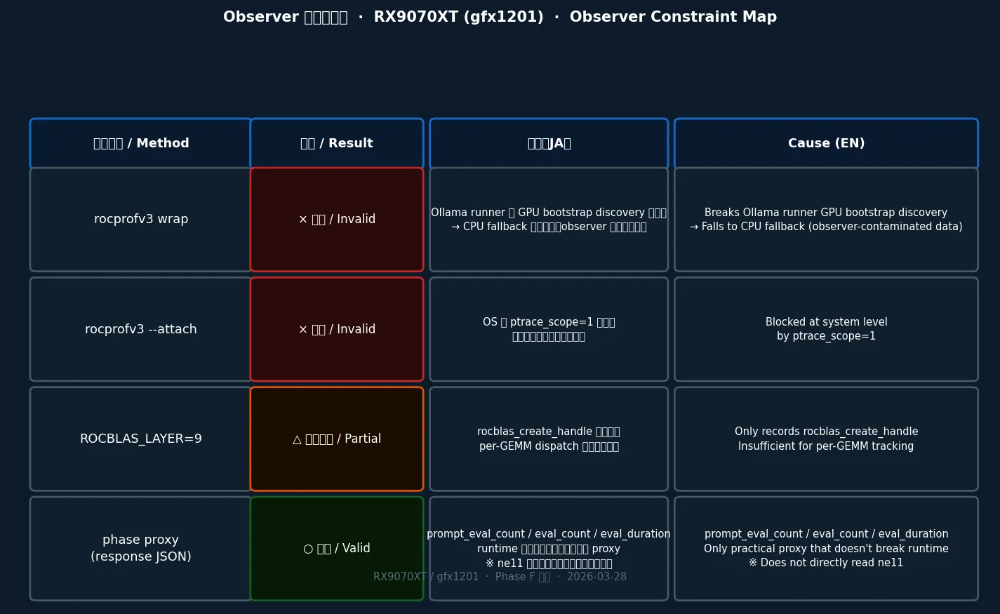

このページで得られる理解：RX9070XT + Ollama の環境では「どの kernel が今動いているか」を直接読む手段が現時点で存在しない、という事実の確認と、その理由の記録。
What you'll gain here: the confirmed fact that no means currently exists to directly read which kernel is active in RX9070XT + Ollama, along with a record of why each approach fails.
このページが追う問いは一つ。RX9070XT 上の Ollama で、どの GPU kernel が使われているかを直接読める手段は存在するのか？
答えは「現時点では No」。wrap も attach も layer も、すべて機能しない。
消去法の末に残るのは phase proxy（response JSON）だけ。
これは C14 portability pilot が「直接観測」ではなく「多層証拠の積み上げ」で進む理由の核心でもある。
One question drives this page: is there any means to directly read which GPU kernel is active on Ollama running on RX9070XT?
The answer is currently No. Wrap, attach, and layer logging all fail.
What remains by elimination is only the phase proxy (response JSON).
This is also the core reason why the C14 portability pilot proceeds via multi-layer inference rather than direct observation.
prompt_eval_count）だけ。
これは「優れた手段を選んだ」ではなく、「他がすべて機能しない状況で唯一生き残った手段」。prompt_eval_count from response JSON) remains.
This was not chosen for its quality — it is the last approach standing after all others failed.GPU の中でどの「仕事」が動いているかを見たい。 でも問題がある。のぞこうとすると、機械そのものが止まる。
We want to see which "job" is running inside the GPU. But there's a problem: if you try to look, the machine stops running.
いろんな方法を試した。結果を順に言う：
We tried several approaches. Here's what happened:

クリックで拡大 · 2026-03-28 時点での各 observer の状態
Click to enlarge · Observer status as of 2026-03-28
観測ポイント： Ollama を起動するとき、外から GPU 観測ツールをかぶせて一緒に動かせば、「どの仕事が GPU に割り当てられたか」を記録できるか？
Observation target: If we launch Ollama with a GPU observation tool wrapped around it from the start, can we record which jobs get dispatched to the GPU?
最も直接的な手段として試みた。rocprofv3（AMD GPU の標準観測ツール。GPU にどんな仕事が投げられたかをログに残せる）を使って、ollama serve（Ollama をサーバーとして起動するコマンド）を「かぶせた状態で」起動した。つまり「Ollama を単独で動かす」のではなく、「観測ツールに見張らせながら起動する」やり方を試みた。
This was the most direct approach. We used rocprofv3 (AMD's standard GPU observation tool — it can log which jobs are sent to the GPU) and launched ollama serve (the command that starts Ollama as a server) with the observation tool wrapped around it. Rather than running Ollama standalone, we tried running it while being watched from the start.
ここから分かること：
この実行で得られたデータは「観測ツールが状況を変えてしまった」ものとして扱う。CPU で動いた記録は、RX9070XT での GPU 経路を観測したことにならない。
→ 次の問い： 「最初からかぶせる」のではなく、「起動後に後からくっつける」やり方なら経路を壊さずに記録できるか？
What this tells us:
Data from this run is treated as "observation changed the situation." CPU-mode execution does not count as observing the GPU path on the RX9070XT.
→ Next question: Rather than wrapping from the start, can we attach after launch without disrupting the path?
観測ポイント： Ollama を先に普通に起動し、動き始めたあとで観測ツールを後からつなげれば、起動処理を壊さずに GPU の仕事を記録できるか？
Observation target: Start Ollama normally first, then connect the observation tool after it's running — can we record GPU jobs without disrupting startup?
手段①では「最初からかぶせる」ことで起動処理が壊れた。ならば、Ollama を先に起動して GPU の準備が終わってから、後で観測ツールをくっつければいい——そう考えて試みた。
専門的に言うと：rocprofv3 --attach（動いているプロセスに後からアタッチするオプション）を使おうとした。
Approach 1 broke startup by wrapping from the beginning. So the idea was: start Ollama first, wait until GPU setup is done, then attach the observation tool afterward.
Technically: we tried using rocprofv3 --attach (the option to attach to an already-running process).
ptrace_scope = 1）によって、「別のプログラムに後からくっつく」操作そのものが拒否された。ptrace とは「OS が、別のプログラムの中をのぞいたり制御したりする許可」を管理する仕組み。この設定が「1（制限あり）」だと、無関係なプロセスからのくっつきは断られる。ptrace_scope = 1) blocked the act of "attaching to another program after the fact" entirely.ptrace is the mechanism the OS uses to manage permission for "looking inside or controlling another program." When set to 1 (restricted), attachments from unrelated processes are refused.
ここから分かること：
後からくっつける方式は OS の設定に依存しており、標準的な環境では使えない。設定を変えて使うことは選択肢から外した。
→ 次の問い： rocprofv3 を使わずに、行列計算ライブラリの呼び出しだけを記録する方法はあるか？
What this tells us:
The attach approach depends on OS settings and is unavailable in a standard environment. Changing the setting to make it work was ruled out.
→ Next question: Without using rocprofv3, is there a way to log just the matrix library calls?
観測ポイント： GPU 全体を観測するのはあきらめて、行列計算専用ライブラリ（rocBLAS）への呼び出しだけをログに残せるか？
Observation target: Rather than observing the whole GPU, can we at least log calls made to the matrix computation library (rocBLAS)?
手段①②がどちらも動かせない状況で、もっと範囲を絞ることにした。LLM の推論では「行列のかけ算（GEMM）」が計算の大部分を占めており、そこを担当するのが rocBLAS（AMD 製の行列計算ライブラリ）。
専門的に言うと：ROCBLAS_LAYER=9 という環境変数を設定すると、rocBLAS への API 呼び出しをログとして出力できる。この方法はプロセス自体を壊さずに使える可能性があった。
With approaches 1 and 2 both unavailable, we narrowed the scope. In LLM inference, "matrix multiplication (GEMM)" dominates the computation, and rocBLAS (AMD's matrix computation library) handles that.
Technically: setting the environment variable ROCBLAS_LAYER=9 outputs a log of API calls made to rocBLAS, and this approach might work without disrupting the running process.
rocblas_create_handle が呼ばれた）」ことは確認できた。しかし、その後の行列計算ひとつひとつについてのログは出なかった。rocblas_create_handle was called)." But there was no log for each individual matrix computation afterward.
ここから分かること：
「行列計算ライブラリにアクセスがあった」ことは確認できた。ただし、LLM の Q4_K の処理は多くの場合、rocBLAS を経由しない独自カーネル（MMVQ/MMQ）が担っており、そのルートには ROCBLAS_LAYER の窓が届かない。rocBLAS が使われる「BLAS fallback」という別ルートに入らない限り、何も見えない。
→ 次の問い： この 3 つをすべて除いた後に、何か残るものはあるか？
What this tells us:
We confirmed "the matrix library was accessed." However, Q4_K processing in LLM inference mostly takes a custom kernel path (MMVQ/MMQ) that doesn't go through rocBLAS, and ROCBLAS_LAYER can't see that route. It only sees anything when the "BLAS fallback" route is taken.
→ Next question: After ruling out all three of these, is there anything left?
観測ポイント： Ollama の動作を一切壊さずに、「GPU の中でどの処理ルートを通ったか」をある程度推理できる手段があるか？
Observation target: Without touching Ollama's runtime at all, is there any way to roughly infer which processing route was taken inside the GPU?
手段①〜③がすべて使えない状況で、発想を変えた。
ソースコードを読み返すと、GPU の中での「どのカーネル（仕事の担当者）を使うか」の分岐は、行列の列数（ne11）で決まっている。そしてこれは、「プロンプトに含まれるトークン数（単語の数のようなもの）」とほぼ一致する。
ならば、Ollama が返す response JSON の中に含まれる prompt_eval_count（プロンプトを何トークン処理したか）を読むことで、ne11 の代わりに使えないか？
専門的に言うと：これが「phase proxy（間接的な近似指標）」の発想。
With approaches 1–3 all blocked, we changed our thinking.
Re-reading the source code: the branch that decides "which kernel (worker) to use" inside the GPU is determined by the number of matrix columns (ne11). And this corresponds closely to "the number of tokens (roughly, words) in the prompt."
So — could we read prompt_eval_count (how many prompt tokens were processed) from Ollama's response JSON and use it as a stand-in for ne11?
Technically: this is the idea behind "phase proxy (an indirect approximate indicator)."
prompt_eval_count = 3 → MMVQ 圏（ne11 ≤ 8 に対応）。
prompt_eval_count = 11 → MMQ-eligible 圏（8 < ne11 ≤ 256 に対応）。
runtime は壊れず、GPU 上で正常に実行された。
prompt_eval_count = 3 → MMVQ zone (maps to ne11 ≤ 8).
prompt_eval_count = 11 → MMQ-eligible zone (maps to 8 < ne11 ≤ 256).
The runtime was not disrupted; execution proceeded on GPU normally.
prompt_eval_count を読む → 3ne11 = 3 ≤ 8 → MMVQ 圏に入っているはず と推理prompt_eval_count を読む → 118 < ne11 = 11 ≤ 256 → MMQ 圏に入っているはず と推理prompt_eval_count from response JSON → 3ne11 = 3 ≤ 8 → infer "it's in the MMVQ zone"prompt_eval_count → 118 < ne11 = 11 ≤ 256 → infer "it's in the MMQ zone"ここから分かること： phase proxy は「dispatch の直接確認」ではなく「dispatch 圏の近似推定」。 それでも、runtime を壊さずに dispatch 圏を区別できる現時点で唯一の手段であることが確認できた。
What this tells us: The phase proxy is not direct dispatch confirmation — it is an approximate inference of the dispatch zone. However, it has been confirmed as the only currently available means to distinguish dispatch zones without disrupting the runtime.
| 示せることCan Show | 示せないことCannot Show |
|---|---|
| rocprofv3 wrap が CPU fallback を引き起こすこと（observer 汚染の確認） rocprofv3 wrap causes CPU fallback (observer contamination confirmed) | CPU fallback 時の実行内容（計測対象が変わっている） What ran during CPU fallback (the measurement target has changed) |
| ptrace_scope=1 が --attach をブロックすること ptrace_scope=1 blocks --attach | ptrace_scope を下げた環境での attach の挙動（調査環境の前提を変えてしまう） Attach behavior with ptrace_scope lowered (alters the investigation baseline) |
| rocBLAS の handle が作成されていること（ROCBLAS_LAYER=9 で確認） rocBLAS handle is created (confirmed via ROCBLAS_LAYER=9) | per-GEMM の dispatch 帰属（ROCBLAS_LAYER では粒度不足） Per-GEMM dispatch attribution (ROCBLAS_LAYER lacks sufficient granularity) |
| phase proxy で dispatch 圏の近似を読めること Phase proxy can approximate the dispatch zone | kernel launch 時の正確な ne11 値（response JSON からは直接取れない） Exact ne11 value at kernel launch (not directly readable from response JSON) |
observer が軒並みブロックされる状況を受けて、調査は「直接観測」ではなく「多層証拠の積み上げ」で進めることになった。 Phase A–F はその積み上げの設計。各層で「何を固定したか」を確認できる。
Facing blocked direct observers, the investigation shifted to building multi-layer evidence rather than direct observation. Phase A–F is the design for that process — each phase fixes a specific layer.
/proc/maps で 12 ライブラリのロードを確認。/proc/maps.
direct observer がまだ blocked のままなので、次に広げるべきなのは workload を無秩序に増やすことではなく、
source 側で tensor type から dispatch family への地図を先に作ること。
ここでは、いまの Q4_K_M case study と、量子化方式をまたぐ一般 map を意図的に分ける。
With direct observers still blocked, the next expansion is not to add workloads indiscriminately,
but to build a source-side map from tensor type to dispatch family first.
We intentionally separate the current Q4_K_M case study from the broader cross-quantization map.
file type と tensor type が同じではないこと。
`Q4_K_M` というラベルを持つモデルでも、実際の tensor 側では `Q4_K` だけでなく `Q5_K` / `Q6_K` / `Q8_0` が混ざりうる。
The key point is that file type and tensor type are not the same.
Even a model labeled Q4_K_M can contain tensor-side mixes such as `Q4_K`, `Q5_K`, `Q6_K`, and `Q8_0`.
| 見る層Layer to map | 今回固定したことWhat is now fixed |
|---|---|
| 量子化ラベルQuantization label |
Q4_K_M のような file type は model-level label であり、tensor-level reality を全部は表さない。
A file type such as Q4_K_M is a model-level label and does not fully describe tensor-level reality.
|
| matmul 分岐Matmul split |
quantized matmul は source 上で MMVQ (≤ 8) / MMQ / BLAS fallback に分かれる。
Quantized matmul splits in source into MMVQ (≤ 8), MMQ, and BLAS fallback.
|
| 隣接 opAdjacent ops |
get_rows、dequant/convert、RoPE、attention は量子化 coverage が揃わないので、同一 map と見なさない。
get_rows, dequant/convert, RoPE, and attention do not share one uniform quantization coverage map.
|
この一般 map を広げる最初の別枝としては IQ1_S を先に置く。 理由は、source 上で `MMVQ` / `MMQ` の両方に entry があり、しかも既存の RDNA4 fatbin には `bundle_0082` という `gfx1201` `mul_mat_q` anchor がすでに見えているから。 さらに practical path を分解すると、`ollama create -q IQ1_S` のような requantize route は狭いが、existing GGUF の direct import path は別経路で残っている。`Q5_K_M` はその次に回す。
The first branch to broaden this general map with is IQ1_S. The reason is that it already has source-side entry into both `MMVQ` and `MMQ`, and the current RDNA4 fatbin already exposes a `gfx1201` `mul_mat_q` anchor in `bundle_0082`. Practical-path analysis also split further: the `ollama create -q IQ1_S` requantize route is narrow, while direct import of an existing GGUF appears to remain a separate path. `Q5_K_M` comes after that.